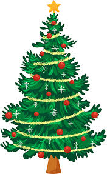

Karácsonyi Varázslat
Mikulás
Karácsonyfa
Ajándékok
Mikulás
Rövid leírás
A Mikulás a gyermekek kedvenc ünnepi alakja, aki a szánján érkezik, hogy ajándékokkal lepje meg a jó gyerekeket.
Barátságos, kedves, és mindig mosolyog.
- Származás: Északi-sark
- Kedvenc ruhája: Piros kabát, fehér prémmel
- Járműve: Rénszarvasok húzta szán
- Segítői: Manók
- Különlegesség: Kéményen keresztül érkezik
Karácsonyfa
Rövid leírás
A karácsonyfa az ünnepi dekoráció középpontja, díszekkel és égősorokkal ékesítve.
A családok az ajándékokat a fa alá helyezik.
- Eredet: Finnország
- Dekorációk: Gömbök, csillag, szaloncukor
- Fényforrás: Színes égők
- Hagyomány: December 24-én díszítik
- Különlegesség: A csillag a tetején

Ajándékok
Rövid leírás
Az ajándékok a szeretet és az öröm szimbólumai, melyeket a családtagok és barátok adnak egymásnak.
Az ajándékok csomagolása gyakran művészi alkotás.
- Hagyomány: Mikulás vagy családtagok helyezik a fa alá
- Csomagolás: Színes papír, szalagok
- Funkció: Örömszerzés
- Ajándék ötletek: Könyvek, játékok, édességek
- Különlegesség: Kézzel készített ajándékok különleges értéket hordoznak